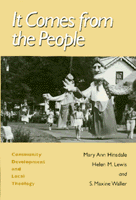

An Appalachian community develops a theology of liberation
An Appalachian community develops a theology of liberation


 An Appalachian community develops a theology of liberation
An Appalachian community develops a theology of liberation

|  |
It Comes from the PeopleCommunity Development and Local TheologyMary Ann Hinsdale, Helen M. Lewis and S. Maxine Wallerpaper EAN: 978-1-56639-212-9 (ISBN: 1-56639-212-8) |
Co-winner for the Transformational Politics Book Award, American Political Science Association, 1996
The closing of local mines and factories collapsed the economic and social structure of Ivanhoe, Virginia, a small, rural town once considered a dying community "on the rough side of the mountain." Documenting the creative survival techniques developed by Ivanhoe citizens in the aftermath, It Comes from the People tells how this community organized to revitalize the town and demand participation in its future.
Photos, interviews, stories, songs, poems, and scenes from a local theater production tell how this process of rebuilding gradually uncovered the community's own local theology and a growing consciousness of cultural and religious values. A significant aspect of this social transformation in Ivanhoe, as in many rural areas, was the emergence of women as leaders, educators, and organizers, developing new approaches to revive the economy and the people simultaneously.
This book is unusually open about the difficult process faced by outside researchers working with community members to describe community life. It discusses the inherent dilemmas frankly and presents a model for those who engage in community studies and ethnographic research.
Excerpt available at www.temple.edu/tempress
Foreword – Robert McAfee Brown
Preface – Louis F. McNeil
Acknowledgments
Introduction – Mary Ann Hinsdale and Helen M. Lewis
Part I: The Community Development Process: A Case Study
Introduction – Helen M. Lewis
1. Historical Background
2. Organizing and Mobilizing the Community
3. Confronting and Using Power
4. Getting Educated
5. Using Culture in Community Development
6. Leadership and Organizational Development
7. Insiders, Outsiders, and Participatory Research
Part II: Local Theology in a Rural Mountain Community
Introduction – Mary Ann Hinsdale
8. Reading and Using the Bible
9. Theology from the People
10. Ritual and Ethics
11. Emerging Women's Voices: "Unlearning to Not Speak"
12. Ministry: Within and Without
13. The Churches and Community Development
Epilogue – Mary Ann Hinsdale, Helen M. Lewis, and S. Maxine Waller
Appendix A: Context and Methodology
Appendix B: Scenes and Songs from It Came from Within
Notes
Index
 | Mary Ann Hinsdale is Associate Professor of Religious Studies at Boston College. |
Helen M. Lewis is Interim Director of the Appalachian Center at Berea College in Kentucky.
S. Maxine Waller is President of the Ivanhoe Civic League and directs community-based student volunteer programs in Virginia.
© 2015 Temple University. All Rights Reserved. This page: http://www.temple.edu/tempress/titles/1013_reg.html.